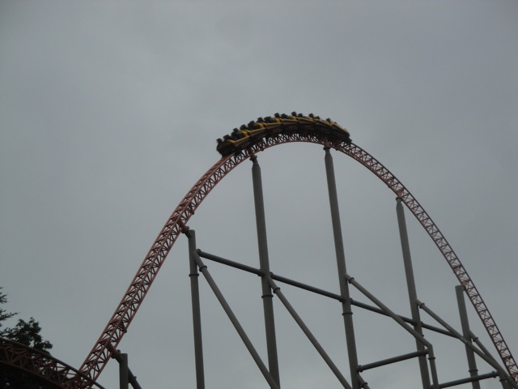
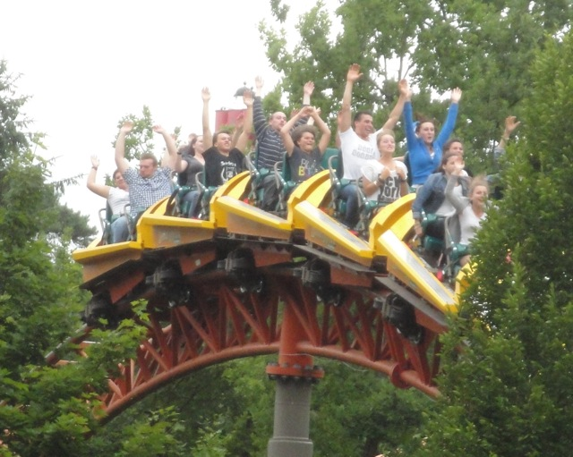
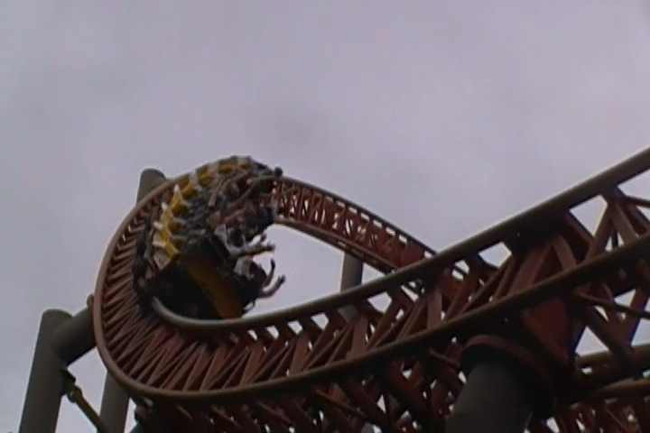
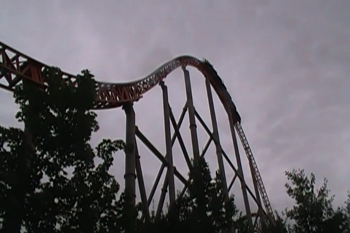

| |
Expedition Ge Force Review

Today at Incrediblecoasters, we're going to be reviewing Expedition Ge Force. The star attraction at Holiday Park and not only is this the best coaster in Germany, this is one of the best roller coasters on the planet. Yes, this ride is actually one of the best coasters on the planet. Located at this small little park in Southwest Germany. It is that good. So let's not waste any more time and get on this amazing coaster. We hop in the car, buckle the seatbet, pull down the lap bar, and away we go. Climbing up the lifthill. There's not much of a view other than the top of trees for miles to see. But hey. I like trees. It's pretty. But it's a fast lifthill, and soon enough, we'll be heading down that first drop. And MAN!!! We have a first drop for you here. It's not only a 90 degree vertical drop, but it also twists, so you dive down, get some sweet ejector air, and also some really good laterals as you twist to the right down the first drop. I'm dead serious. This is easily up in my Top 3 Favorite Drops. Hmm, I should really make that into a Top 10 List sometime. Crap! I'm getting distracted. Stay focused. Anyways, we then head into this airtime hill that just provides you with some really good floater air. No, I'm dead serious. It's some of the best. It's really strong sustained floater air throughout the entire hill. Your ass is out of the seat the entire time. Yeah. That's a great moment. And to liven things up, we head into an overbank turn. And just like on its American sister coaster, Bizarro, these aren't just cruiser elements like on the majority of coasters with overbanked turns. These things have WHIP to them. You get some nice laterals as you head around the overbanked turn. And of course, it's right back into another airtime hill. And while the first one focused on long sustained floater air, this one just gives us EJECTOR AIR!!! We FLY out of our seat here. And I LOVE it. I just absolutely LOVE IT!!! We then rise up into this turn. It's not very forceful and just sort of goes. So yeah. It's a moment for you to catch your breath from all the agressiveness that had been going on before. But I don't mind. It gives me a chance to really enjoy the speed. We then drop down to the ground and head up into another curved hill. And JOY!!! We have ejector air at the top. This ride is just chock full of it. Now there's a trim brake right here. But honestly, I didn't even notice it. We don't slow down or anything. We just glide through it and into a high speed turn. And after that, we go through a sort of...I guess I'd call it a wave hill, but I don't think this kind of hill actually has a name. It's where you head up a spiral hill twist to one side, and then twist down the opposite side. Almost like a mini-top hat in a way, except you come out the same direction you entered. All I know is that I LOVE THESE ELEMENTS!! Not only does it give you a ton of laterals, but there's another insane pop of ejector air. And you get it simaltaneously. So it's a double win and I really like it. We then head into another small overbanked turn. And again, it has some bite to it. Again. LOVE!!! But we're not even getting close to the good stuff. Cause coming up next, a whole bunch of crazy insane airtime!!! =) And we start out with a bunny hop that not only delievers insane ejector air, but it also gives us some great headchoppers from the supports. Which again, is just FANTASTIC!!! And we shred through another ejector air hill. BAM!!! Just WOW!!! We apparently go through a trim brake, but WHO CARES!!! WE'RE JUST FLYING!!! We head around a sharp turn, get some crazy laterals, and head into another round of bunny hops which continue to deliver the amazing ejector air. Two more times, we are ejected from our seats, only held in by the T-Bar, and then we glide into the brake run. WOW!!! HOLY CRAP!!!! All the love and praise that this ride gets is NOT exxagerated, it is really that good. I know it's really close and with so many great coasters, it's hard to choose, but ultimately I went with Expedition Ge Force as my #1 steel coaster. I mean, it has some of the strongest ejector air ever, really crazy laterals, one of my favorite first drops on any coaster, and a fast vigarous pace that never slows down. It's just an amazing amazing ride. Easily the best coaster in Holiday Park, the best in Germany, and one of the best in the world. You have to ride this coaster if you come here. Make sure you get on it early in case it breaks down (thank god I did, otherwise I wouldn't have ridden this crazy ride). Yeah. This ride is good. =)
10/10
Location: Holiday Park
Opened: 2001
Built by: Intamin
Last Ridden: June 24, 2012
Expedition Ge Force Photos








Home
|